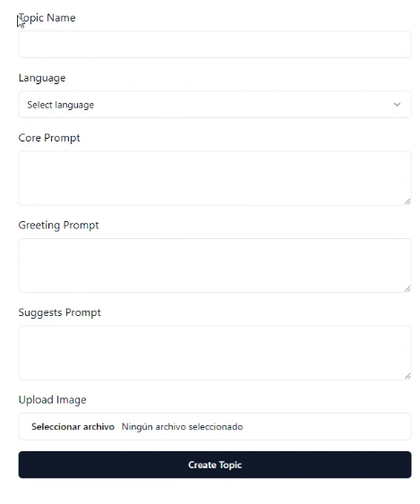
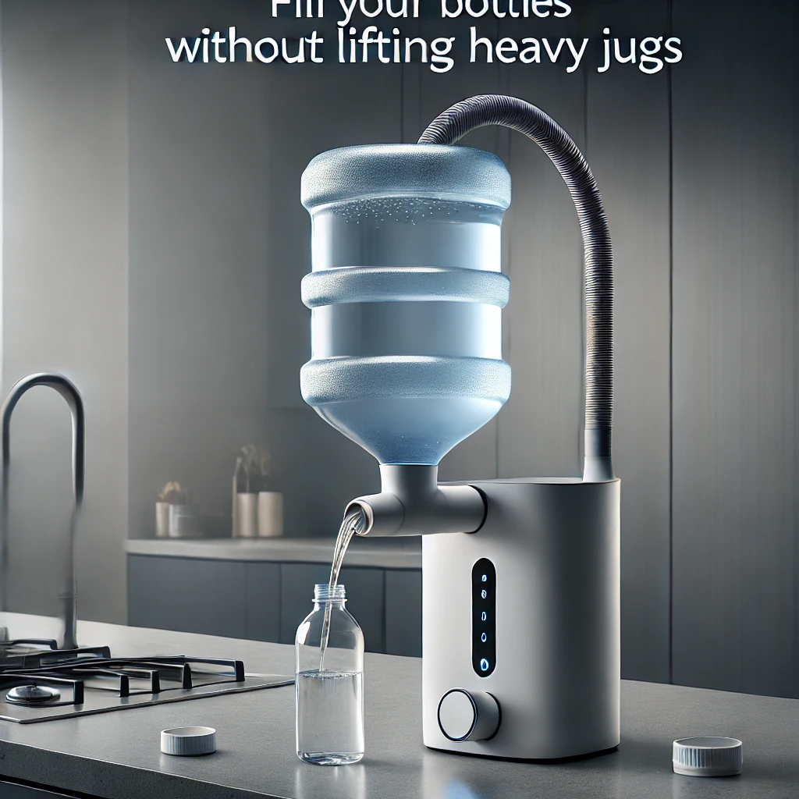
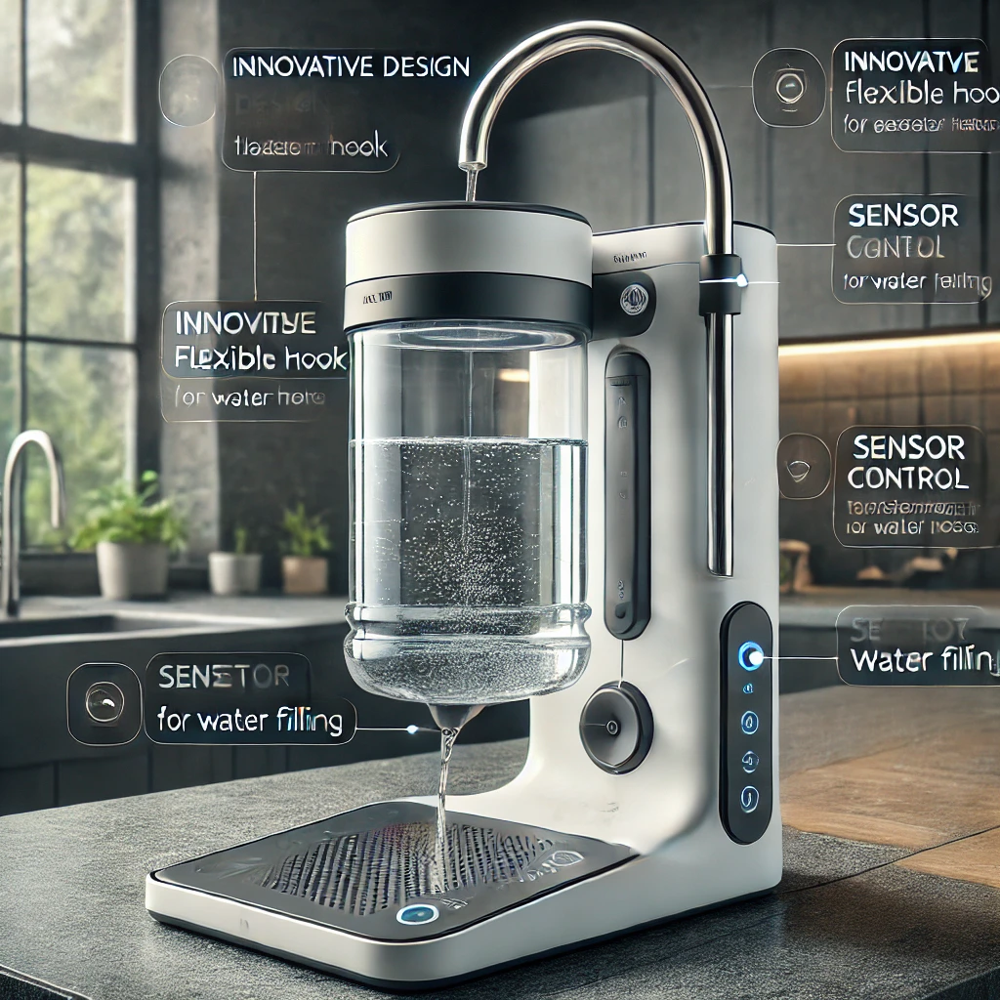
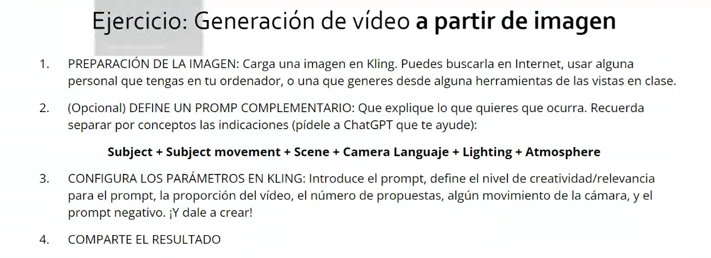
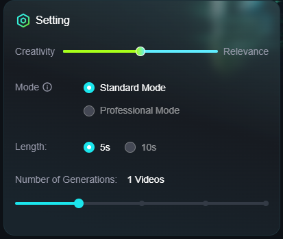
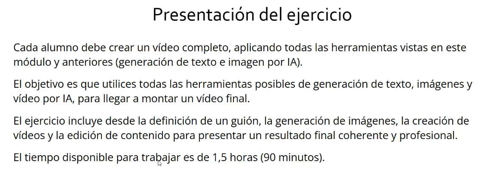
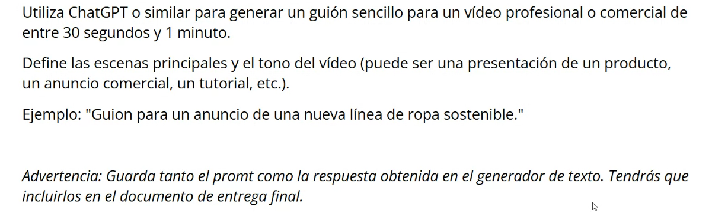

Anotaciones importantes:
Módulo 1: Fundamentos de inteligencia artificial
Herramientas a usar:
1. Notebook LM, herramienta que utiliza la IA (Inteligencia Artificial) generativa para mejorar la experiencia de tomar notas
2. Suno AI, herramienta que utiliza la IA (Inteligencia Artificial) generativa para crear canciones y audios en general
Hay muchos tipos de IA:
1. En robots de limpieza
2. En sistemas de navegación
Pero, ¿qué es un software con IA?
Es un sistema informático que trata de imitar la inteligencia humana y el cerebro humano
Hay que tener en cuenta tres conceptos fundamentales dentro del mundo de la IA:
1. DL, o también llamado Deep Learning, subcampo de la IA que utiliza redes neuronales artificiales con múltiples capas para "aprender" a realizar tareas complejas, procesar grandes cantidades de datos y extraer patrones complejos de estos
2. ML, o también llamado Machine Learning, subcampo de la IA que permite a las máquinas aprender a partir de datos, sin ser programadas explícitamente para cada tarea, para que con esos datos y algoritmos proporcionados, ella misma encuentre patrones y tome decisiones.
Funcionamiento práctico: se quiere distinguir entre perros y gatos, por lo que el ML, lo que haría es, que en lugar de escribir un programa con todas las características de un perro y un gato, mostraría miles de imágenes de ambos animales, para así analizarlas y encontrar patrones comunes que permitan diferenciar entre una mascota y la otra
Tipos: aprendizaje supervisado, no supervisado y por refuerzo. En el primero, se utilizan datos etiquetados para entrenar al modelo, ejemplo: cada imagen estaría etiquetada como "perro" o como "gato". En el segundo, se utilizan datos sin etiquetar para encontrar patrones ocultos, ejemplo: agrupar clientes en segmentos basados de las compras de los mismos. En el tercero, se aprende a tomar decisiones en un entorno a través de "prueba y error", recibiendo recompensas o penalizaciones por sus acciones
APPs del ML: reconocimiento de imágenes, procesamiento del lenguaje natural, como traducciones o chatbots, sugerencia de productos o contenido personalizado, detección de fraudes y predicción de hechos
Diferencias entre el ML y el DL: mientras que el DL es un subconjunto del ML que utiliza redes neuronales artificiales con múltiples capas para aprender representaciones jerárquicas de los datos, el ML es un término más amplio que abarca diferentes técnicas de aprendizaje automático
3. PL, o también llamado Procesamiento del Lenguaje, subcampo de la IA que se enfoca en la interacción entre las computadoras y el lenguaje humano, es decir, su función es enseñar a las máquinas a comprender, interpretar y generar lenguaje humano de forma significativa y útil
Técnicas que utiliza: la Tokenización, el análisis morfológico, el análisis sintáctico, el análisis semántico y el análisis pragmático. El primero se encarga de dividir el texto en unidades más pequeñas como palabras. El segundo se encarga de estudiar la estructura interna de las palabras. El tercero se encarga de analizar la estructura gramatical de las oraciones. El cuarto se encarga de entender el significado de las palabras y las frases. Y el último se encarga de comprender el contexto y la intención detrás del lenguaje

¿Qué es Chat GPT? => Entrar
Es un modelo de lenguaje de inteligencia artificial (IA) desarrollado por OpenAI, basado en un chatbot muy avanzado que puede mantener conversaciones coherentes y naturales con humanos
De acuerdo a sus siglas significa: Generative Pre-Trained Transformer. Es decir, Chat transformador preentrenado generativo
¿Cómo se ha originado?
Antes de su lanzamiento, Chat GPT recibió mucha información proveniente de diversas fuentes, como vídeos, bases de datos o enciclopedias
Para desarrollar juegos con IA:
La IA se divide en dos tipos:
1. IA predictiva se enfoca en analizar el pasado para predecir el futuro
2. IA generativa se enfoca en crear algo nuevo y original a partir de lo que ya existe
Usos de esos dos tipos de IA:
1. La predictiva puede ser usada para predecir ventas o comportamientos de los clientes, detectar fraudes, predecir el valor de acciones en bolsa o predecir fallas en equipos industriales
2. La generativa puede ser usada para generar textos, imágenes, música, videos, códigos de programación o diseños de productos en general
Aunque también se divide en otros dos tipos:
1. IA débil es una herramienta muy especializada, que está limitada a una tarea en específico. Es decir, se enfoca en tareas específicas, no posee conciencia ni comprensión profunda sino que simplemente sigue instrucciones y algoritmos para completar tareas y, es la IA más común actualmente, como los asistentes virtuales o los sistemas de recomendación de productos
2. IA fuerte es una herramienta que actúa como una mente humana, capaz de aprender y adaptarse a cualquier situación. Es decir, su objetivo es tener la máxima inteligencia posible para ser capaz de aprender, comprender, razonar y adaptarse a cualquier situación. Además, ser consciente de sí misma y ser capaz de realizar cualquier tarea intelectual. Actualmente se ha avanzado mucho en el campo de la IA, pero este tipo en concreto, sigue siendo un objetivo a largo plazo y aún no se ha logrado todo su potencial
Herramienta con IA para utilizar la cámara de tu móvil como webcam:
¿Qué es hacer prompting?
Hay prompts maestros, pero de momento la respuesta a la pregunta queda pendiente.....
¿Qué es Dali AI?
Es un sistema de Open AI que genera archivos, tipo imágenes. Hay varias versiones: Dali-E2, Dali-E3, entre otros
Diferentes modelos de lenguaje:
1. Chat GPT 01-mini
2. Chat GPT 04
3. Gemini AI
4. Grok AI - modelo de Elon Musk
5. Flux AI
Ejemplo práctico:
Hay que crear un eslogan, un logo, un hashtag, una mascota, un discurso de defensa y una publicación para promoción en redes sociales, con el objetivo de que tu ciudad sea la elegida para ser la sede de los Juegos Olímpicos 2036
Ciudad: Madrid 2036
Eslogan: Madrid 2036: Un mundo unido bajo un mismo sol
Hashtag: #UnidosPorMadrid2036
Logo:
Mascota:

Himno generado por IA para los JJOO de Madrid 2036:
Creación de Prompts con Gemini AI sobre los JJOO Madrid 2036:
Módulo 2: Chatbots y técnicas de prompting
¿Qué es un Chatbot?
Es la interfaz con la que interactuamos con un Asistente Virtual que utiliza la IA para poder comunicarse de forma similar a un humano y está basada en un programa informático que sigue un conjunto de reglas predefinidas
Tipos de Chatbots:
1. Médicos
2. Psicólogos
3. Otros
Para desarrollar un Back-End:
Uso de la herramienta de IA: _zapier
Ejemplos de Asistentes Virtuales:
1. Siri, es un Asistente Virtual desarrollado por Apple que utiliza IA para: responder las preguntas de los usuarios, realizar acciones en dispositivos y ejecutar comandos mediante voz. Fue lanzado en 2011
2. Alexa, es el Asistente Virtual desarrollado por Amazon más usado por los usuarios, que utiliza IA, funciona a través de los dispositivos Echo y destaca por su integración con la Plataforma de Comercio Electrónico de Amazon. Fue lanzado en 2014
3. Cortana, es un Asistente Virtual desarrollado por Microsoft que utiliza IA, su nombre proviene de la serie de videojuegos Halo. Fue lanzado en 2014
4. Google Assistant, es un Asistente Virtual desarrollado por Google en 2016, que utiliza IA y, fue anunciado como parte del ecosistema del Google Pixel. Actualmente, ha cambiado su nombre a Gemini y tiene la capacidad de hacer capturas de pantalla y reconocimiento inteligente de contenido
¿Qué son los Prompts?
Son instrucciones que hay que dar al modelo de lenguaje basado en IA para poder interactuar con ella y que lleve a cabo la operación sacada por pantalla como salida
Recomendaciones para el envío correcto de Prompts:
1. Hay un límite de tokens a enviar, donde 1 token equivale a 1 palabra en inglés y el máximo de tokens a enviar depende del modelo IA que se esté usando (para algunos, 32000 tokens como máximo)
2. Hay un límite de prompts a enviar al modelo IA en uso, es decir, debes optimizar la interacción con ella, para no estar sin poder usarla durante un tiempo limitado
¿Qué es Perplexity?
Otro modelo de lenguaje o motor de búsqueda basado en IA
Atajos para abreviar los Prompts:
1. /"palabra" => significa que quieres que la IA te diga lo qué es esa "palabra"
2. @ => sirve para que aparezca una lista de selección de submodelos dentro del lenguaje de IA tipo Chat GPT
3. #Temperatura => sirve para que la IA te dé respuestas de acuerdo a un nivel de creatividad bajo, medio o alto
4. #Estructura => sirve para que la IA te dé respuestas de acuerdo a la estructura de: Inicio, Cuerpo (Nudo) y Conclusión (Desenlace)
5. One shot => sirve para que la IA te dé en las respuestas, un ejemplo
¿Cómo crear Prompts en Mr. Marlow?
De forma, adecuada y coherente, para que el propio modelo IA, te dé respuetas más precisas. A más adecuado y coherente, más preciso
Otro modelo de lenguaje basado en IA:
Ejemplo de creación de Prompts de acuerdo a un tema:
Modelos de IA para generar vídeos:
Modelos de IA para temas matemáticos:
Uso de Chatbase:
Es una IA de OpenAI mucho más completa que chatGPT => Acceder
Uso y modificación de PDFs con => PDF24:
Debido a que preserva mucho más tu privacidad que ilovepdf
Módulo 3: Generación y edición de imagen
Esquema importante en la generación de imágenes por IA:

Imágenes generadas por IA:
Al entrar aquí, para ver más imágenes, tienes que actualizar la página
Herramienta de generación de imágenes por IA de Google:
Arquitectura típica de una CNN:

CNN, según sus siglas en inglés, significa: Convolutional Neural Network, o en español: Red Neuronal Convolucional (RNC)
Es una arquitectura de red para Deep Learning que aprende directamente a partir de datos. Usada para identificar patrones en imágenes, con el objetivo de reconocer objetos, clases y categorías. Además, puede clasificar datos de audio, señales y series temporales
Esta arquitectura puede tener cientos de capas para aprender a detectar características de una imagen completa. Todas ellas, se pueden agrupar entre tres capas principales: la capa convolucional o inicial, la capa de agrupamiento o características y la capa totalmente conectada o de clasificación
La primera es donde se aplica el proceso de convolución para la transformación de la imagen inicial
La segunda es una capa de aprendizaje de características de la imagen inicial
Y la tercera es la última capa donde se clasifican esas características para así poder obtener el resultado final (imagen final)
Software práctico de una Red Neuronal:
Autocodificador Convolucional:

Otros Softwares de generación de imágenes por IA:
1. Lexica.ART
Para entrenar la IA:
Hay que usar: Replicate.COM
Para generar un modelo a usar en Replicate:
Hay que usar: Hugging Face
Para generar plantillas HTML + CSS y formar el diseño de una página web:
Ve a: TailWind.AI
Para generar código de programación tipo JS, TS y/o Python, entre otros:
Ve a: Cursor.AI
Ejercicio práctico de una imagen generada por IA:
Enunciado:

Desarrollo del ejercicio:
Voy a crear un nuevo producto para la Empresa donde trabajo, a través de una Campaña de Marketing, por medio de la aparición en Redes Sociales, banners web y anuncios digitales. Para ello, hay que generar, editar y ajustar tres imágenes clave con herramientas de IA, incorporando texto y/o efectos adicionales. Además, hay que diseñar una composición final en Canva que, reúna todos los elementos de la Campaña.
El nuevo producto es un Llena aguas automático.
El motivo por el que he pensado este producto ha sido para resolver el problema de llenar botellas
que caben en el frigorífico, con garrafas pesadas que no caben en él, de forma manual y repetitiva. Además de evitar
máquinas a motor que te echan agua fría/caliente y que requieren de mantenimiento y cuota mensual.
Este invento sobre todo va dirigido a personas que les cuesta cargar garrafas pesadas, o directamente
no quieren cargarlas, aunque puedan.
La solución, es un producto donde puedas enganchar una garrafa a un gancho flexible y movible para poder
darlo la vuelta cómodamente, quitándole previamente el tapón y ajustándolo por un agujero tipo embudo.
El agua caerá al depósito de almacenaje que, retiene el agua hasta que el sensor abra la llave.
Para que la llave se abra, es obligatorio enganchar una botella al sistema adaptable y movible
y, después, ajustar el punto hasta donde se quiera llenar la botella a la altura del sensor incorporado en el producto.
Con el objetivo de dejar que se llene sola hasta que alcance ese punto.
Imágenes generadas con IA:
Imagen 1: El Producto en acción:

Objetivo: Mostrar cómo funciona el producto, destacando su facilidad de uso
Visual: Una escena en la cocina, con el dispositivo llenando una botella de agua
Descripción: El foco será el gancho flexible, el embudo, y cómo el sistema mantiene el agua almacenada hasta que se activa el sensor
Título: "Llena tus botellas sin esfuerzo"
Subtítulo: "Engancha la garrafa, ajusta la botella al sensor y olvídate de estar pendiente del llenado"
Imagen 2: Beneficio del producto:

Objetivo: Enfocar la comodidad que ofrece el producto
Visual: Una persona (de edad avanzada o alguien con dificultades para cargar peso) usando el sistema sin esfuerzo.
La imagen debe transmitir la facilidad de uso, donde la garrafa ya está conectada y el sistema está llenando una botella
Título: "Para quienes necesitan comodidad"
Subtítulo: "Ya no es necesario cargar ni mantener dispensadores costosos"
Imagen 3: Características del producto:

Objetivo: Detallar cómo funciona y qué lo hace especial
Visual: Una imagen del producto en sí, con etiquetas o descripciones de sus partes principales
(gancho flexible, embudo, depósito de almacenaje, sensor de llenado)
Título: "Innovación que cuida de ti"
Subtítulo: "Sensor ajustable, depósito eficiente y un diseño hecho para tu comodidad"
Prompts usados en ChatGPT: Accede aquí
Módulo 4: Generación y edición de vídeo
Para generar vídeos con IA, se usan las siguientes herramientas:
Es una herramienta avanzada de generación de videos con IA, originada en China,
desarrollada por el equipo de Kuaishou
Su funcionamiento consiste en:
1. Transformar texto en videos realistas de alta calidad y de duración de hasta 2 minutos, con resoluciones de hasta 1080p,
escena de cámara y la posibilidad de realizar algunos ajustes extra. El texto, a través de un prompt específico y descriptivo
para que se pueda generar el vídeo IA a partir del contenido de ello. Y además, otro texto, a través de un prompt negativo para
describir lo que no se quiere que aparezca en el vídeo generado
2. Lo mismo que la 1, pero además, añadiendo una imagen al principio y otra al final para hacer más sencilla la generación del vídeo
Ejercicio práctico de un Vídeo generado por Kling.AI:
Enunciado:

Prompt principal escrito:
Marc Márquez está sentado frente a una computadora de última generación, escribiendo código con rapidez en un entorno moderno de oficina en Google.
La cámara sigue sus manos moviéndose con agilidad sobre el teclado, mientras se ven fragmentos de código en la pantalla.
La escena se desarrolla en un elegante espacio de trabajo con escritorios minimalistas y grandes ventanales que dejan entrar luz natural.
La iluminación es brillante, con luces suaves que destacan el ambiente tecnológico, y la atmósfera es de concentración e innovación,
con un toque futurista que refleja la precisión y creatividad del desarrollo de software en Google.
Prompt negativo escrito:
Sin desorden en el escritorio, sin fondos oscuros, sin distracciones visuales y sin equipos antiguos
Ajustes:
Resultado:
Véanse más ejemplos en este: Google Drive
Otras herramientas para generar vídeos con IA:
El famoso Software de Escritorio/Web/Aplicación de: CapCut
Visla.AI, originada en EE.UU
Ejercicio práctico de un Vídeo generado por Visla.AI:
Enunciado:

Tema: Marca de ayuda con rutinas de gimnasio y nutrición deportiva
Resultado: Enlace a Vídeo
Otros Ejemplos
Más herramientas para generar vídeos con IA:
Fliki => Si se usa la versión gratuita, sólo hay disponible 5 min al mes para generar vídeos
Ejercicio práctico 2 de generar un vídeo final con todas las herramientas usadas:
Enunciado:
Antes se debe generar el guión del vídeo siguiendo estas pautas:
Conversación con ChatGPT del guión generado:
Opción A) Resultado del Vídeo generado con Visla AI a partir de una Página Web y editado con CapCut:
Opción B) Resultado del Vídeo generado con Visla AI a partir de imágenes:
Módulo 5: Generación y edición de audio
Aspecto clave:
Creación de pistas de audio personalizadas y adaptadas a diferentes géneros musicales y preferencias del usuario
Softwares de generación de audio:
Ejercicio de generación de una canción con Suno AI a través de un prompt de entrada:
Prompt de entrada:
Necesito un tema musical con ritmo de Hardstyle (subgénero de la música electrónica) que incluya vocal de flamenquito en español
Título de la canción:
Bailar en la Tormenta Hard Remix
Letra de la vocal:
[Verse]
En la noche sin final
Bailamos en el temporal
Las estrellas nos miran mal
Pero no vamos a parar
[Verse 2]
El ritmo en mi corazón
Como fuego en la canción
Tus ojos llenos de pasión
Llueremos sin razón
[Chorus]
Bailar en la tormenta
El viento no nos frena
Tu voz en mi alma suena
Un amor que nunca se apena
[Bridge]
El dolor se va en el ritmo
Tu latido es mi destino
Entre dunas y caminos
Hoy somos peregrinos
[Verse 3]
Descalzos sobre el lodo
En el frenesí nos perdemos
Desafiando al propio modo
De amarnos mientras vivimos
[Chorus]
Bailar en la tormenta
El viento no nos frena
Tu voz en mi alma suena
Un amor que nunca se apena
Resultado:
Ejercicio de generación de una canción con Udio AI a través de un prompt de entrada:
Prompt de entrada:
Esta vez es instrumental, sin vocal:
Me gustaría que me compusieras un tema musical con el ritmo del Tema de Mike Oldfield Tubular Bells Part 1 (los 2 primeros minutos),
pero orientado al género de música electrónica Hardstyle, tipo remix.
Importante que se marque bien el ritmo del Tubular Bells.
Título de la canción:
Tubular Bells Hard Remix
Resultado: